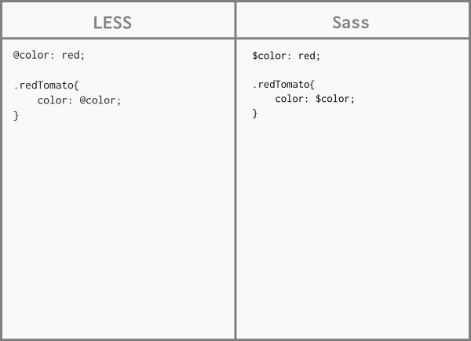
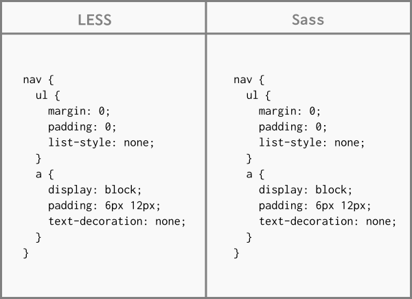
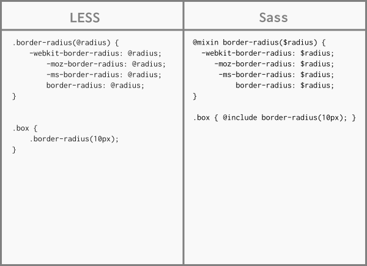
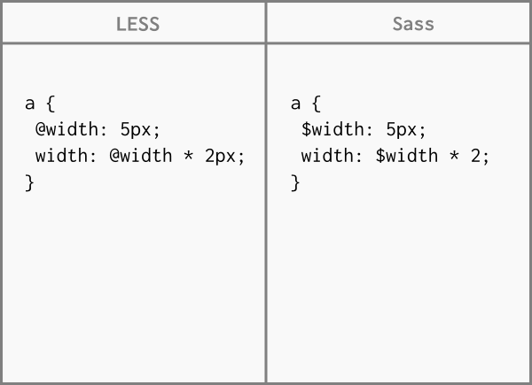
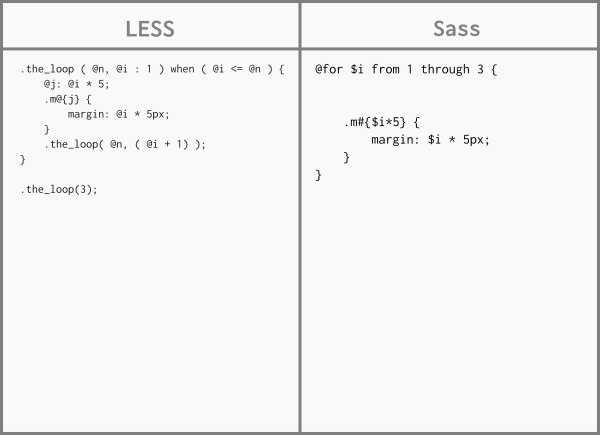
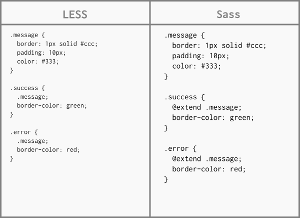
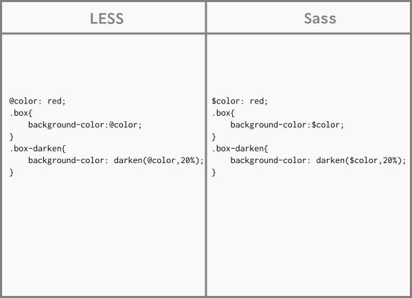

Hoy día, CSS es muy primitivo e incompleto. Crear una función, reutilizar o heredar un valor es difícil de conseguir. En grandes proyectos, el mantenimiento de estos es un gran problema. Mientras que también la programación web está evolucionando, CSS no lo está haciendo.
Los preprocesadores son una herramienta que nos permite escribir pseudocódigo CSS que luego será convertido a CSS real. Este pseudocódigo se conforma de variables, condiciones, bucles o funciones. El objetivo de este pseudocódigo es tener un código más sencillo de mantener y editar.
Sass y LESS nos entregándonos características que nos permiten escribir estilos de manera amigable, divertida y estructurada.
Para instalar Sass, es necesario tener instalado Ruby(2.0).
$ sudo apt-get install ruby
Y una vez instalado se instala Sass:
$ sudo gem install sass
En el caso de LESS, se debe tener instalado Node. Una vez instalado:
$ npm install -g less
Piense en las variables como una forma de almacenar la información que desea reutilizar a lo largo de su hoja de estilo. Puede almacenar cosas como colores, pilas de fuentes o cualquier valor de CSS que crea que va a querer reutilizar

Sass te permitirá anidar tus selectores CSS de una manera que siga la misma jerarquía visual de tu HTML. Tenga en cuenta que las reglas excesivamente anidadas resultarán en CSS sobrecalificado que podría ser difícil de mantener y generalmente se considera una mala práctica.

Algunas cosas en CSS son un poco tediosas de escribir, especialmente con CSS3 y los muchos prefijos de proveedor que existen. Un mixin le permite crear grupos de declaraciones CSS que desea reutilizar en su sitio. Incluso puede pasar valores para hacer su mixin más flexible.

Hacer matemáticas en tu CSS es muy útil. Sass tiene un puñado de operadores matemáticos estándar como +, -, *, / y %. En nuestro ejemplo vamos a hacer algunas matemáticas simples para calcular anchuras para un lado y artículo.

Funciones son pequeñas piezas de código que toman argumentos y que a través de alguna operación, obtienen, retornan o transforman un valor, sea numérico, color o una cadena, y de igual forma como en CSS, estas funciones las podemos usar como valores en las propiedades, pero también para realizar otras operaciones.

@extend es una característica de Sass que permite que las clases compartan un conjunto de propiedades entre sí. Los selectores que extienden una clase en Sass tendrán su selector incluido junto a la clase que se está ampliando, lo que dará como resultado una lista separada por comas.

Sass viene con funciones que se pueden aplicar fácilmente a los colores en sus propiedades de CSS. Estas funciones, cuando se usan correctamente, pueden ser increíblemente poderosas. Quitan la picadura de elegir y manipular colores. Cuando se usan con variables, pueden acelerar el desarrollo drásticamente.

Se refiere a la forma más básica de obtener nuestros archivos precompilados con la extensión “.css”, lo hacemos en línea de comandos o Shell de la siguiente manera:
$ sass --watch archivo_origen.scss:archivo_destino.css
También en Sass manejo diferentes especificaciones para el resultado final, en un ambiente de producción es mejor tener un archivo con nuestros estilos de manera que ocupe el menor espacio y consumo. En Sass se le llama “compressed” y la linea de comandos es la siguiente:
**$ sass --watch --style compressed archivo_origen.scss:archivo_destino.css
Existen varias formas:
1) A través de la terminal, utilizando el código:
$ lessc styles.css
2) Usando less en el navegador
$ link rel="stylesheet/less" type="text/css" href="styles.less"
$ script src=”less.js”
Este método solo es recomendado para fases de desarrollo y no para la página final ya que por este medio se aumenta el tiempo de carga de la página y se hace más lento compilar.
3) Utilizando GUIs especificas de LESS/SASS como son Crunch 2, SimpLESS, Koala, etc.
4) O en el caso que esté alguna IDE, existen plugins que al guardar el archivo LESS/SASS automaticamente te lo transforma en un archivo CSS.